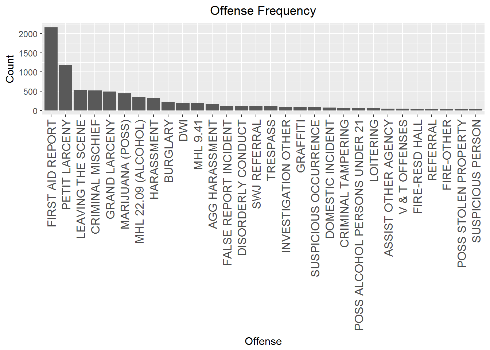
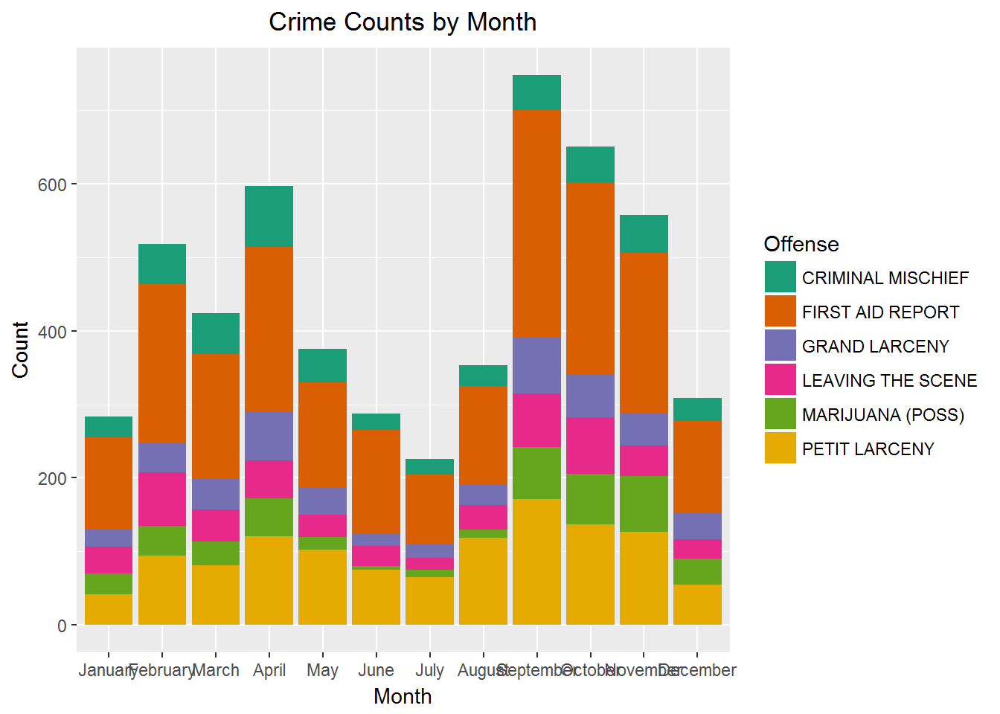

This project uses data from crime reported to University at Buffalo police to analyze and help forecast where and what types of crimes will occur. We’re working directly with campus police to gather data and give them insights, with an end goal of producing a Shiny app and prediction model with a heat map showing where we expect crime to occur and when. This will hopefully help campus police plan their patrol routes and staffing needs.
This markdown shows some of the exploratory analysis done so far, but this project is still in its infancy, so stay tuned!
Although I’m going to save readers the hassle of how I extracted the data from the Excel sheets provided by the police, there will be another markdown showing how the data was cleaned, how the features were added, and how the latitudes and longitudes were geocoded using ggmap.
For now, we’ll just assume we have a finished dataframe ready to use!
The structure of the data is below. The main predictors are (1) the type of offense, (2) the location, and (3) the time. We’re going to exploit these as much as possible, and use them to add “derived” features wherever possible to help explain any variations.
str(crimeData)## 'data.frame': 8614 obs. of 15 variables:
## $ District : chr "11 DISTRICT" "11 DISTRICT" "11 DISTRICT" "11 DISTRICT" ...
## $ Offense : chr "AGG HARASSMENT" "AGG HARASSMENT" "ASSAULT" "ASSAULT" ...
## $ CD-NO : chr "11000856" "11001843" "11000474" "11001810" ...
## $ Date Report: POSIXct, format: "2011-01-28 07:03:02" "2011-02-20 14:24:55" ...
## $ Date : Date, format: "2011-01-26" "2011-02-17" ...
## $ Case Status: chr "Closed" "Student Wide Judiciary" "Cleared By Arrest" "Cleared By Arrest" ...
## $ Address : chr "9 GOODYEAR RD" "5 MICHAEL(MACDONALD) RD" "9 GOODYEAR RD" "10 GOODYEAR RD" ...
## $ Time : chr "04:07" "10:52" "15:13" "16:45" ...
## $ Month : chr "January" "February" "January" "February" ...
## $ Day : chr "Wednesday" "Thursday" "Tuesday" "Saturday" ...
## $ hr : num 4 10 15 16 16 2 19 12 13 3 ...
## $ lat : num 42.9 42.8 42.9 42.9 42.9 ...
## $ lng : num -78.8 -78.8 -78.8 -78.8 -78.8 ...
## $ Semester : Factor w/ 4 levels "Fall","Spring",..: 4 2 4 2 2 2 2 2 2 2 ...
## $ Year : num 2011 2011 2011 2011 2011 ...First let’s check out where these crimes lie on a map.
It seems a bit scattered. Let’s hone in on the North (left) and South (right) campuses.
southLoc <- c(lon=-78.82, lat=42.956)
southMap <- get_map(location = southLoc,
source = "google",
maptype = "roadmap",
zoom=14)
south <- ggmap(southMap) +
geom_point(data=crimeData, aes(x=lng, y=lat),
alpha=0.5, color="darkred", size=2)
northLoc <- c(lon=-78.785, lat=43)
northMap <- get_map(location = northLoc,
source = "google",
maptype = "roadmap",
zoom=14)
north <- ggmap(northMap) +
geom_point(data=crimeData, aes(x=lng, y=lat),
alpha=0.5, color="darkred", size=2)
grid.arrange(north, south, ncol = 2)That’s a little better, but there’s a lot of overlap of crime, so we can’t really tell how often crimes occur at these points. Let’s see if a contour plot will help.
northMap <- get_map(location = northLoc,
source = "google",
maptype = "roadmap",
zoom=15, color = "bw")
contours1 <- stat_density2d(
aes(x = lng, y = lat, fill = ..level.., alpha = ..level..),
size = 1, data = crimeData, n = 200, bins = 30,
geom = "polygon")
p1 <- ggmap(northMap, extent = 'device', legend = "topleft")+
contours1 + scale_alpha_continuous(range = c(0.25, 0.4), guide = "none")+
scale_fill_gradient('Violent\nCrime\nDensity') + ggtitle("North Campus Crime Contour Plot")
southMap <- get_map(location = southLoc,
source = "google",
maptype = "roadmap",
zoom=15, color = "bw")
contours2 <- stat_density2d(
aes(x = lng, y = lat, fill = ..level.., alpha = ..level..),
size = 1, data = crimeData, n = 200, bins = 12,
geom = "polygon")
p2 <- ggmap(southMap, extent = 'device', legend = "topleft")+
contours2 + scale_alpha_continuous(range = c(0.25, 0.4), guide = "none")+
scale_fill_gradient('Violent\nCrime\nDensity')+ ggtitle("South Campus Crime Contour Plot")That’s better. Now that we have a better idea of where crimes are occuring, let’s see where the variations are.
First let’s check by the hour.
Now that’s interesting! We see little variation on North campus except for a few peaks between 4-10 pm, but we also see different areas with reported crimes.
South campus has a lot more activity ranging from 11 am all the way to 1 am, with a few peaks, and a much wider targeted area around those times.
We’re going to want to check for these peaks when we analyze the time-series plots. But for now, let’s see if there’s any variation by day of the week.
Not so much going on with the North campus, but South campus is on fire on the weekends, with some hot spots on Mondays, Wednesdays, and Thursdays.
The contour plots give us a good indication on the frequency of crimes reported at different locations, and how they affect reported locations. We’re going to need to focus on these plots (and including different groupings) when we finally get to our prediction model.
We’ve seen some information on where crimes are reported, but not so much which crimes are reported, so let’s shift our focus now.
Let’s take a look at a breakdown of the crimes with frequencies > 30.
dat <- data.frame(table(crimeData$Offense))
names(dat) <- c("Offense", "Count")
dat$Offense <- reorder(dat$Offense, -dat$Count)
dat <- dat %>%
filter(Count > 30)
ggplot(dat, aes(x=Offense, y=Count))+
geom_bar(stat="identity") +
labs(x="Offense", y="Count") +
ggtitle("Offense Frequency") +
theme(axis.text.x = element_text(angle=90, hjust=1, vjust=0.5, size=8)) +
theme(plot.title = element_text(hjust = 0.5),
axis.text.x=element_text(size=12))
Looks like mostly non-violent crimes, and a few police codes that we’ll have to ask about. Also seems there may be some overlap in the offense levels so we should be able to consolidate some of them. Here’s another way to visualize the type of crimes being reported.
pal <- brewer.pal(8,"Dark2")
corps <- table(crimeData$Offense)
wordcloud(names(corps), as.numeric(corps), max.words = 100, random.order = F, color = pal)First aid reports was removed so that we can see the rest of the crimes a bit clearer.
Let’s check the correlation between some of the more common crimes.
common <- data.frame(Offense=as.character(dat[which(dat$Count>200),"Offense"]))
df_common <- semi_join(crimeData, common, by="Offense")
df <- df_common%>%
group_by(Offense, Date) %>%
summarise(n = n())
M <- cor(model.matrix(~.-1, data = df[,1]))
corrplot(M, type = "upper", order = "hclust",
tl.col = "black", tl.srt = 45,
number.cex = 0.75, tl.cex = 0.68)Oddly enough, we’re seeing negative correlations where I would have expected positive ones. Unfortunately this package doesn’t offer p-values, so we’ll have to re-do this with another package.
Let’s see how some of the most common crimes vary by some of the time-related features we have.
# Let's look at most common crimes
common <- data.frame(Offense=as.character(dat[which(dat$Count>400),"Offense"]))
df_common <- semi_join(crimeData, common, by="Offense")
# Plot hour counts
ggplot(df_common, aes(hr, ..count..))+
geom_bar(aes(fill = Offense)) + ggtitle("Crime Counts by Hour")+
labs(x = "Hour", y= "Count")+
theme(plot.title = element_text(hjust = 0.5))+
scale_fill_brewer(palette="Dark2")# Plot month counts
# First we create a month ID so the plot can order the bars appropriately
dat.m <- data.frame(Month=months(seq(as.Date("2000/1/1"),
by = "month", length.out = 12)),month.id = 1:12)
temp <- merge(df_common, dat.m)
ggplot(temp, aes(reorder(Month, month.id), ..count..))+
geom_bar(aes(fill = Offense)) + ggtitle("Crime Counts by Month")+
labs(x = "Month", y= "Count")+
theme(plot.title = element_text(hjust = 0.5))+
scale_fill_brewer(palette="Dark2")
# We do a similar thing with days
dat.m <- data.frame(Day=weekdays(seq(as.Date("1910/1/2"), as.Date("1910/1/8"), "days")),
day.id = 1:7)
temp <- merge(df_common, dat.m)
ggplot(temp, aes(reorder(Day, day.id), ..count..))+
geom_bar(aes(fill = Offense))+ ggtitle("Crime Counts by Day")+
labs(x = "Day", y= "Count")+
theme(plot.title = element_text(hjust = 0.5))+
scale_fill_brewer(palette="Dark2")Definitely some variations by hour, and month, but we should consolidate the crime list before moving ahead.
Until then, we can look at some more time-series data.
dat <- crimeData
dat$Year <- factor(dat$Year)
dat$DayOfYear <- as.numeric(format(dat$Date, "%j"))
dat <- dat %>%
group_by(DayOfYear, Year) %>%
summarise(n=n())
ggplot(data = dat,
mapping = aes(x = DayOfYear, y = n, shape = Year, colour = Year)) +
geom_point() +
geom_line() +
facet_grid(facets = Year ~ .) +
theme_bw()+labs(x = "Day of Year", y = "Crime Count")ggplotly()The past 6 years look fairly similar in trends. The large peaks correspond to the end of April. We’ll have to bring in the academic calendar to know what that’s about. The plot below shows the breakdown of crimes for April 23th 2016 which is where we have a large peak.
dat <- crimeData %>%
filter(Date == "2016-04-23")
dat <- data.frame(table(dat$Offense))
names(dat) <- c("Offense", "Count")
ggplot(dat, aes(x=Offense, y=Count))+
geom_bar(stat="identity") +
labs(x="Offense", y="Count") +
ggtitle("Offense Frequency") +
theme(axis.text.x = element_text(angle=90, hjust=1, vjust=0.5, size=8)) +
theme(plot.title = element_text(hjust = 0.5),
axis.text.x=element_text(size=12))Booze! And injuries to accompany, of course.
We can also visualize the consistency between years through a violin plot showing monthly crime rate.
dat <- crimeData %>%
group_by(Month, Year) %>%
summarise(n=n())
dat$Year <- factor(dat$Year)
ggplot(dat, aes(x = Year, y =n, fill = Year))+
geom_violin(trim = FALSE)+
stat_summary(fun.data = mean_sdl,
geom="pointrange", color="black")+
labs(x="Year", y="Monthly Crime Count")+
ggtitle("Yearly Violin Plot")2015 is the only year where we don’t have a bimodal distribution. We expect the bimodal peaks to come from Summer and Winter breaks.
Let’s look at the monthly time-series data along with the most common crimes. Note that the plot below is interactive and let’s you zoom in, so feel free to explore!
dat <- data.frame(table(crimeData$Offense))
names(dat) <- c("Offense", "Count")
common <- data.frame(Offense=as.character(dat[which(dat$Count>300),"Offense"]))
df_common <- semi_join(crimeData, common, by="Offense")
df_common$allMonths <- as.Date(floor_date(df_common$Date, "month"))
dat <- df_common %>%
group_by(Offense, allMonths) %>%
summarise(n=n())
dat <- dcast(dat, allMonths ~ Offense)
dat[is.na(dat)] <- 0
dxts <- xts(dat, order.by = dat$allMonths)
dygraph(dxts, main = "Monthly Totals") %>%
dyRangeSelector(height = 10)Let’s see some more time-series plots.
# We're going to define a function first
start_date <- crimeData$Date[1]
elapsed_months <- function(end_date) {
ed <- as.POSIXlt(end_date)
sd <- as.POSIXlt(start_date)
12 * (ed$year - sd$year) + (ed$mon - sd$mon)
}
allMonths <- apply(data.frame(date = crimeData$Date), 1, elapsed_months)
dat <- crimeData
dat$allMonths <- allMonths
dat <- dat %>%
group_by(allMonths, Semester) %>%
summarise(n=n())
abbrevs <- month.abb[rep(c(1:12), length(dat$allMonths))][1:length(dat$allMonths)]
p <- ggplot(dat, aes(allMonths, n)) + geom_line(size = 1.2) +
geom_point(aes(colour = Semester), size = 6)+
geom_text(aes(label=abbrevs),hjust=-0.5, vjust=0)+
labs(x = "Months", y = "Crime Count")
ggplotly(p)dat_allMonths <- dat # We're going to use this again
# Now let's look at each semester
dat <- crimeData
dat$Year <- factor(dat$Year)
dat$DayOfYear <- as.numeric(format(dat$Date, "%j"))
dat <- dat %>%
group_by(Semester, DayOfYear) %>%
summarise(n=n())
p <- ggplot(data = dat,
mapping = aes(x = DayOfYear, y = n, shape = Semester, colour = Semester)) +
geom_point() +
geom_line() +
theme_bw()+labs(x = "Day of Year", y = "Crime Count")
ggplotly(p)As expected, the number of reported crimes tends to peak during the Fall and Spring semesters. We also see some high variations in the Spring semester that we’ll need to look into.
Until then we can do a bit more work with our time-series plots.
Let’s see if we can smoothen it out first.
# First we're going to convert data into time-series data
dfSeries <- ts(dat_allMonths$n, frequency = 12, start = c(2011,1))
plot.ts(SMA(dfSeries, n = 12), xlab = "Months",
ylab = "Monthly Crime Count")
title(main = "Moving Average with Order 12")It looks like there was a small peak around Fall of 2014 before dipping back to around 120 crimes per month.
We want to be able to isolate the seasonal variations from any other trends that may be hidden. We’ll do so by decomposing the time-series to get the non-seasonal data.
dfSeries_comps <- decompose(dfSeries)
plot(dfSeries_comps)We can see the same trend as before.
Next on the list: